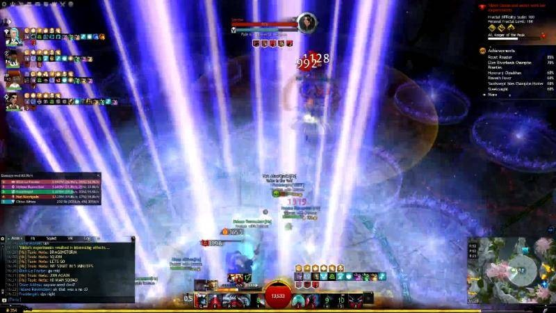
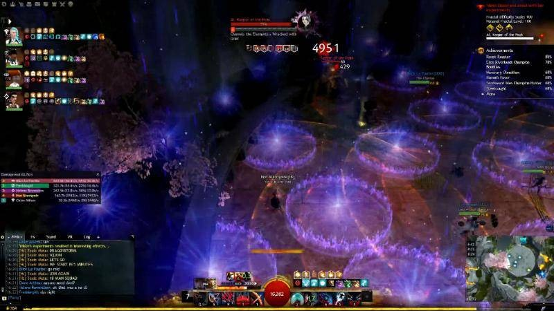

Luft: 8 statt 6 Wolken zerstören, bevor die erste Welle des großen Angriffs kommt – sonst Wipe; Angriff exakt ausweichen. Feuer: Meteore in Wellen 3/3/4/2, Tether auf Spieler. Beim Arena-Angriff hinter den sicheren Meteor – immer rechts, wenn man zur Arenamitte schaut.
2
Licht-Phase: Wasser
Zwei Greens können gleichzeitig spawnen → aufteilen. Dunkelblaue Orbs spawnen im Uhrzeigersinn ab Nord. Tidal Bargain kann zusammen mit einem weiteren Debuff Spieler festsetzen – Tether sauber managen.
3
Dunkelphase: /gg & Cleanse
Während des Rollenspiels vor der Dunkelphase /gg zum Resetten. Ab jetzt stacken Torment + Confusion schnell → viel Cleanse nötig.
4
Fears (100–66 %)
Nach 2 min ohne Phase: 4 unverwundbare Fears fixieren zufällige Spieler → wegkiten. Erreicht dich einer: 6 s Stun + großer Gruppenschaden.
5
Sorrow (ab 66 %)
Stationärer Sorrow mit Breakbar → in 10 s brechen, sonst schwerer Gruppenschaden. Ab 33 %: zwei Sorrows gleichzeitig.
6
Guilt (ab 33 %) & Split-AoE
Guilt tethert den nächsten Spieler und stackt Crushing Guilt bis 10 → down. Tether zwischen Spielern weitergeben; geht er an Ai, wird sie stärker und nimmt weniger Schaden. Split-AoE: Ziel läuft aus der Gruppe raus.
⑤ Sorrow – Breakbar in 10 s⑥ Split-AoE: Ziel raus aus der Gruppe
Details zum Nachschlagen
Überblick
Der CM überspringt die frühen Encounter – nur Ai. Erst Lichtphase (100–1 %), dann setzt sie sich zurück und startet die Dunkelphase (100–1 %).
Mehr Schaden, neue Mechaniken, komplett neue Dunkelphase.
Lichtphase
Luft: 8 Energiequellen (Wolken) statt 6, engeres Timing. Nicht rechtzeitig weg = Wipe. Den großen Angriff genau ausweichen.
Feuer: Meteore in Wellen 3, 3, 4, 2 mit Tethers auf zufällige Spieler – Überlappungen vermeiden. Beim arenaweiten Angriff hinter einen Meteor; nur einer ist sicher: rechts, mit Blick zur Arenamitte.
Wasser: zwei Greens gleichzeitig möglich, dunkelblaue Orbs im Uhrzeigersinn ab Nord. Tidal Bargain kann zusammen mit einem weiteren Debuff Spieler festsetzen.
Dunkelphase

Sorrow mit Breakbar

Split-AoE auf mehreren Spielern
Ab jetzt Torment + Confusion auf allen Angriffen – Cleanse ist entscheidend.
Fears (100–66 %): nach 2 min ohne Phase teleportiert Ai in die Mitte, 4 Fears fixieren Spieler – kiten und Ais AoEs ausweichen.
Sorrow (66–33 %): Split-Channel, Sorrow mit Breakbar (10 s). Fears kommen weiter.
Guilt (33–1 %): Tether stackt bis 10× Crushing Guilt → down. Weitergeben! An Ai = Buff für sie. Zwei Sorrows gleichzeitig.
Split-AoE: Ziel entfernt sich von der Gruppe – Überlappung ist verheerend.
Dark Line: Linie fegt über die Plattform – ausweichen oder Defensiv-Skill.
Dark Dash: Dash mit Knockback, kann dich von der Plattform werfen – Position halten.
Dark Breakbar: schnell brechen, sonst Buffs oder massiver Schaden.
Klassen & Rollen
Daten: GW2 Wingman, Challenge Mode, „Balance Patch November 2026“, Stand 21.11.2026 · Ai (ganzer Kampf): Erfolgsquote 45,7 %, Median-Kill 7:42 min · Für diese Ansicht gibt es nur wenige Logs – Zahlen mit Vorsicht lesen.
Am häufigsten gespielt (CM)
Spec
Anteil
Troubadour
16,7 %
Mechanist
16,7 %
Tempest
11,7 %
Scourge
8,3 %
Willbender
6,7 %
Firebrand
6,7 %
Harbinger
6,7 %
Reaper
5,0 %
Berserker
5,0 %
Antiquary
5,0 %
Höchster Ø-DPS (CM)
Spec
Ø DPS
Top
Firebrand
21.111
21.223
Chronomancer
21.021
21.022
Antiquary
19.565
19.615
Mechanist
17.320
18.793
Harbinger
16.237
20.723
Willbender
15.232
19.999
Tempest
12.132
16.158
Scourge
10.586
17.702
Berserker
10.227
22.285
Reaper
7.945
10.549
Rollen-Empfehlung (abgeleitet aus Beliebtheit + Ø-DPS)
Rolle
Specs
Warum
DPS sicher & beliebt
Mechanist, Tempest, Scourge, Willbender
Am häufigsten in erfolgreichen CM-Logs – bewährt für diese Mechaniken.
Große Spanne zwischen Ø und Top-DPS → als Support und als (Boon-)DPS gespielt.
Heal-Support
Troubadour
Ø-DPS unter 3,5k → in CM-Logs praktisch nur als Heiler/Support.
Komp-Tipp: Laut Wingman dominieren hier Troubadour und Mechanist, dazu Tempest und Scourge. Mindestens eine starke Cleanse-Quelle (Torment/Confusion) und viel CC für die Sorrows einplanen.
Klassentipps – worauf du achten musst
Mechanik-Bezug aus dem Hardstuck-Guide; die Klassenhinweise sind allgemeine Spieltipps. Für die neuesten Elite-Specs (z. B. Troubadour, Ritualist, Paragon, Luminary, Conduit, Evoker, Antiquary, Galeshot, Amalgam) gelten v. a. die Klassen-Grundregeln – prüfe die konkreten Skills im aktuellen Build.